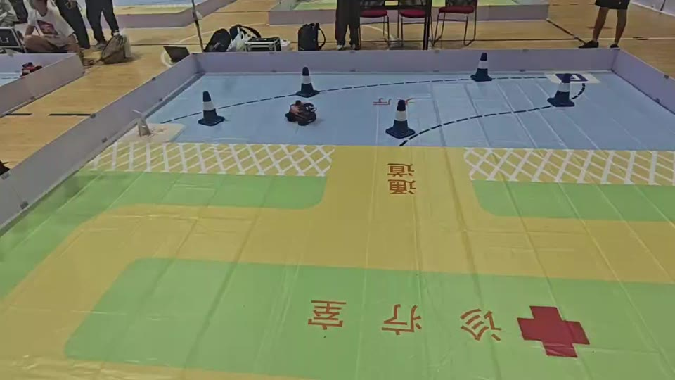
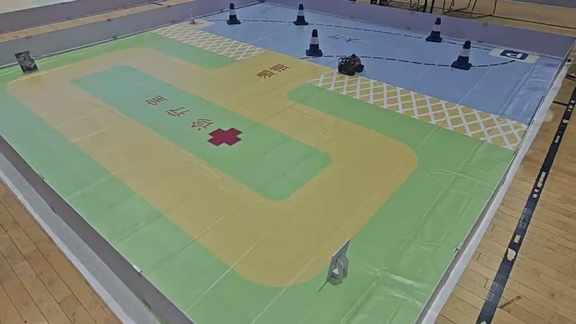

How we built it技术路线
A USB camera and N10 LiDAR provide the visual and spatial observations. An image–radar fusion model predicts a local waypoint; the upper computer turns that target into speed and steering commands. An STM32 drives the Ackermann chassis and sends vehicle state back. On top of this loop, a mission state machine coordinates navigation and task transitions.
USB 相机和 N10 激光雷达提供图像与空间信息。图像—雷达融合模型预测局部目标点，上位机据此生成速度与转向指令；STM32 驱动 Ackermann 底盘并回传车辆状态。任务状态机在这条链路之上组织导航与任务切换。
Camera + LiDAR → Local waypoint → Speed & steering → Chassis feedback相机 + 雷达 → 局部目标点 → 速度与转向 → 底盘反馈
Built with RDK X5, ROS 2, and STM32.系统采用 RDK X5、ROS 2 与 STM32。 ImgRadarNet ↗ ROS System ↗


From the track to the finals从赛道到全国总决赛
This team project earned Second Prize at the National Finals and First Prize in the South China Regional Competition. The photo captures our team at the August 2026 finals.
这项团队作品获得全国总决赛二等奖、华南赛区区域赛一等奖。右侧是我们在 2026 年 8 月全国总决赛现场的合照。
National Finals · Second Prize
South China Region · First Prize全国总决赛 · 二等奖
华南赛区区域赛 · 一等奖